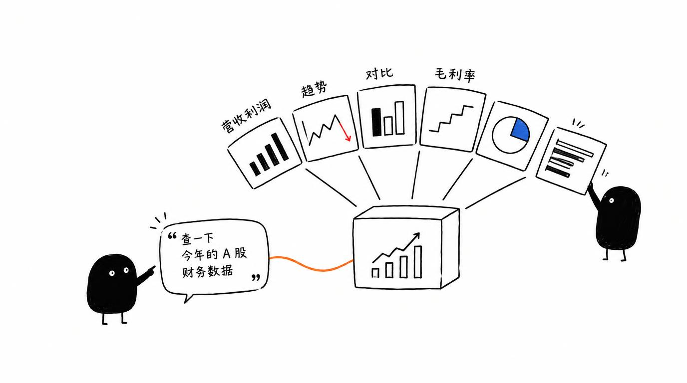

说句话就能查 A 股数据画图表：自然语言输入公司名或需求，自动查询上市公司财务数据，生成 6 种专业图表。
看财报要的数据，翻网站、导表格、做图表太折腾
「看下茅台近三年营收」——这句话以前意味着开网站、找数据、拉表格、画图四步。这个助手把四步合并成一次对话：自然语言进去，专业图表出来，财务数据查询和可视化一次完成。
A 股财经图表对话助手 的六大能力
输入公司名或需求，自动查询 A 股上市公司数据
营收利润、毛利率、趋势、对比等专业图表自动生成
以 Baostock 为主要数据源，数据稳定可靠
主数据源不可用时自动切换 akshare，保证可用性
生成的图表可管理、可回看
完整执行日志，查数和生成过程可追溯
小黑手绘风格插图

从输入到产出，一步到位
快速开始
git clone https://github.com/liangdabiao/claudesdk-financial-chart-chat.git
npm install
配置 Claude API Key
npm run dev # 例如提问：看下茅台近三年营收
现代化技术组合
关于 A 股财经图表对话助手 的常见疑问